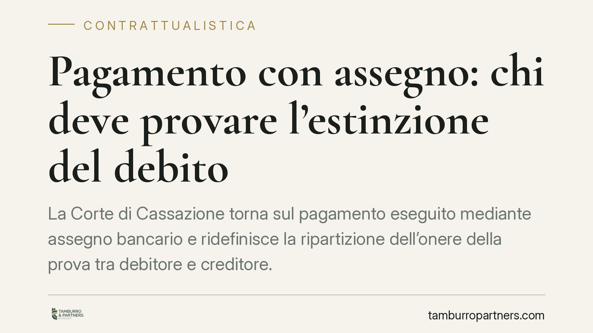

Pagamento con assegno e onere della prova: cosa dice la Cassazione
Consegnare un assegno non equivale sempre a pagare. La Cassazione, sulla scia delle Sezioni Unite del 2007, ribadisce che l'effetto liberatorio dipende dal buon fine del titolo e che l'onere della prova segue regole precise. Ne derivano conseguenze concrete per imprese e professionisti che ricevono o effettuano pagamenti a mezzo assegno.

Il fatto e perché conta
La consegna di un assegno bancario o circolare solleva una domanda ricorrente nei contenziosi commerciali: il debitore che ha consegnato il titolo si è liberato dall'obbligazione? E, in caso di contestazione, chi deve provare cosa?
La questione non è teorica. Da essa dipende chi rischia di pagare due volte, chi deve conservare la documentazione e come si struttura una difesa in giudizio.
Inquadramento normativo
Il punto di riferimento è costituito dalle Sezioni Unite della Cassazione (Cass., Sez. Un., 18 dicembre 2007, nn. 26617 e 26618), tuttora orientamento dominante. Le Sezioni Unite hanno chiarito che la consegna di un assegno non estingue immediatamente l'obbligazione, ma produce un effetto liberatorio differito e subordinato al buon fine del titolo, ossia al suo effettivo incasso.
È importante evitare un equivoco diffuso. Questo meccanismo non viene ricondotto alla datio in solutum (art. 1197 c.c.), che richiede il consenso espresso del creditore e con la quale l'obbligazione originaria si estingue subito. Non viene neppure qualificato come cessione del credito (artt. 1260 e 1198 c.c.): l'art. 1198 c.c. disciplina la diversa figura della «cessione di un credito in luogo dell'adempimento», che qui non ricorre. Le Sezioni Unite fondano invece l'effetto solutorio differito sui doveri di correttezza (art. 1175 c.c.) e buona fede (art. 1375 c.c.): il creditore che accetta l'assegno assume l'onere di attivarsi per l'incasso, e la liberazione del debitore matura al momento della riscossione.
Salvo patto espresso in senso contrario (datio in solutum ex art. 1197 c.c.), dunque, l'assegno vale come mezzo di pagamento con effetto pro solvendo: fino all'incasso, l'obbligazione originaria resta in vita.
Onere della prova e dovere di cooperazione
Sul piano probatorio vale la regola generale dell'art. 2697 c.c.: chi vuole far valere un diritto ne prova i fatti costitutivi, e chi eccepisce l'estinzione prova i fatti estintivi. Applicata all'assegno, la regola comporta uno spostamento decisivo: il debitore che invoca la liberazione deve provare non la mera consegna del titolo, ma il suo effettivo incasso.
Specularmente, il creditore non può rifiutarsi di presentare l'assegno all'incasso e poi pretendere il pagamento sostenendo di non aver ricevuto nulla. I doveri di correttezza e buona fede gli impongono un contegno cooperativo: attivarsi tempestivamente per la riscossione e, se il titolo resta insoluto, comunicarlo alla controparte.
Sul versante cambiario vanno inoltre rispettati i termini della legge assegno (R.D. 21 dicembre 1933, n. 1736): l'assegno pagabile nel Comune di emissione va presentato entro 8 giorni, quello pagabile in altro Comune entro 15 giorni. Il mancato pagamento va constatato con il protesto o dichiarazione equivalente, presupposto per l'esercizio dell'azione di regresso. Il ritardo o l'inerzia del portatore incidono sui suoi diritti verso i coobbligati di regresso.
Implicazioni pratiche
Per chi riceve pagamenti a mezzo assegno, la posizione impone diligenza attiva: non basta trattenere il titolo, occorre presentarlo all'incasso nei tempi utili.
Per chi paga, la prova della liberazione passa dalla dimostrazione dell'avvenuto incasso. La sola ricevuta di consegna dell'assegno, in caso di contestazione, può rivelarsi insufficiente.
In entrambi i casi la tracciabilità documentale diventa lo strumento difensivo primario.
Cosa fare in concreto
- Documentate la consegna e l'incasso. Conservate copia dell'assegno, ricevuta datata e firmata e, soprattutto, l'estratto conto che attesta l'accredito.
- Presentate il titolo nei termini di legge (8 o 15 giorni ex R.D. 1736/1933) per non compromettere le azioni di regresso.
- Se il creditore, prevedete una clausola contrattuale che chiarisca se il pagamento vale pro solvendo o, con patto espresso, come datio in solutum ex art. 1197 c.c.
- Comunicate per iscritto l'eventuale mancato buon fine del titolo, così da fissare la posizione delle parti e i termini per il protesto.
- Verificate prima di azioni giudiziali la sequenza consegna-presentazione-incasso: è su questa che si costruisce l'onere della prova.
---
*Contributo informativo a cura di Tamburro & Partners - Avv. Giuseppe Tamburro. Non costituisce parere legale.*
Ogni contratto ha il suo equilibrio.
Se vuoi una revisione delle clausole o una redazione su misura, scrivi allo studio. Ti rispondiamo entro un giorno lavorativo.